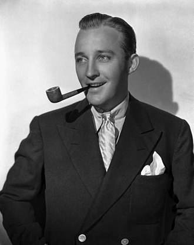

|  |
Harry Lillis Crosby (Bing Crosby) ( Washington, 3 de maio de 1903 — Madrid, Espanha, 14 de outubro de 1977),foi um cantor, ator, locutor, comediante, apresentador e entertainer americano com mais de meio século de carreira. Bing Crosby foi o artista mais vendido e bem-sucedido do show business; Crosby foi líder em vendas de discos, classificações de rádio e receita bruta de filmes, um dos personagens mais importantes e influentes do século XX. |